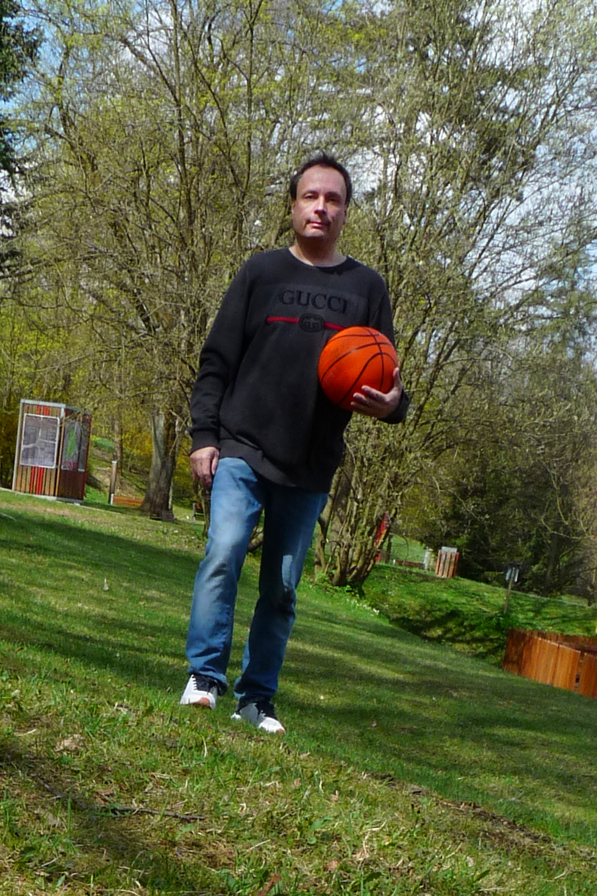
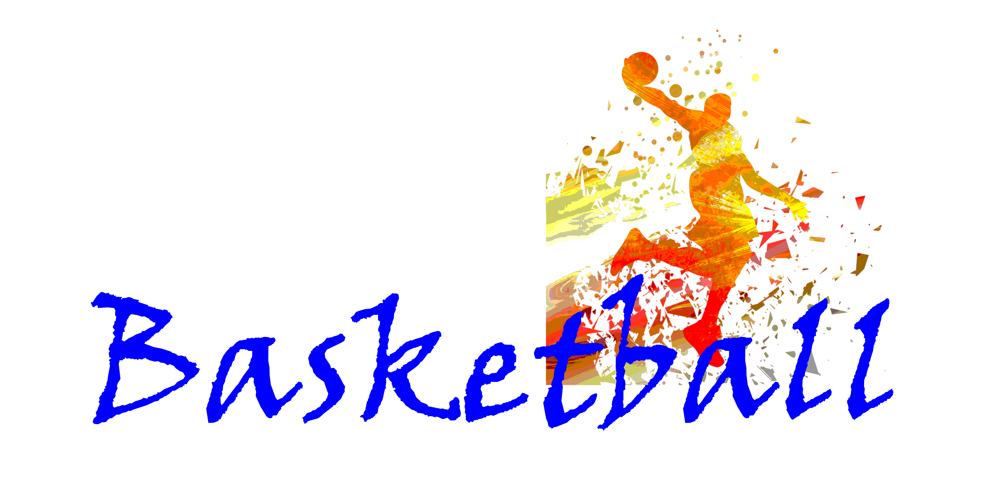

kdo tam ještě nebyl a chtěl by se tam podívat....
Mallorca ráj turistů
Španělské kulturní moře
Mallorca je jeden z největších Baleárských ostrovů, ale také největší ostrov Španělska. Leží v západní části Středozemního moře ve vzdálenosti přibližně 200 kilometrů od Valencie, Barcelony a Alžíru. Rozloha ostrova činí 3 648 km², je 110 km dlouhý a mezi 60 a 90 km široký. Jeho největším a zároveň i hlavním městem je Palma de Mallorca. Mallorca je častým cílem turistů a cestovní ruch je jedním z hlavních zdrojů příjmů tamního obyvatelstva. Každoročně navštíví Mallorcu 12 milionů turistů, hlavně Němců. Místní obyvatelé se živí kromě cestovního ruchu i zemědělstvím a pěstováním vína. Na ostrově žije necelý 1 milion obyvatel a úředním jazykem je španělština a katalánština. Dále na Mallorce mají svoje specifické nářečí tzv. Mallorqui, které vychází nejvíce z katalánštiny.Památky a zajímavosti
Hlavnímu městu Palmě dominuje katedrála La Seu (katedrála světla) která byla dostavěna v roce 1587. K vidění je i gotický hrad, který nechal postavit Jakub II.. Ten sloužil jako vězení až do 20. století. Byzantskou periodu připomínají základy baptisteria na půdorysu kříže s trojlistou nádrží na vodu. Po Arabech zde zůstaly arabské lázně z 10. století. Hlavní zástavba pochází z období panování aragonských králů a španělských Habsburků. Roku 1399 byl založen kartuziánský klášter Valldemosa, jehož stavby spolu s lékárnou byly obnoveny v klasicistním slohu. Pobýval tam v letech 1838 – 1839 (v posledních letech svého života) polský skladatel Frederik Chopin se spisovatelkou Sandovou. Z technických památek se v provozu zachovala dráha starého vlaku, která vede z Palmy do městečka Sóller a zpět. Pro turistiku Mallorcu objevil velkovévoda toskánský Ludvík Salvátor, který si v Palmě zbudoval jedno ze sídel. Kromě Palmy je na Mallorce několik oblíbených městeček. Např. Deia – městečko se strmými uličkami, které si oblíbili především umělci, Andratx plný starých kostelů nebo Alcudia s římskými hradbam.video je použito z internetu a je ilustrační